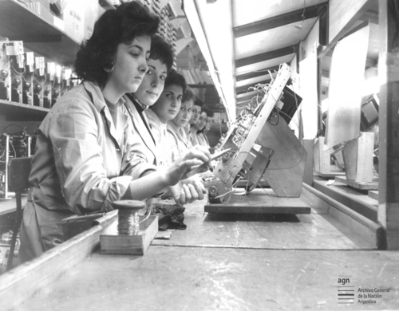
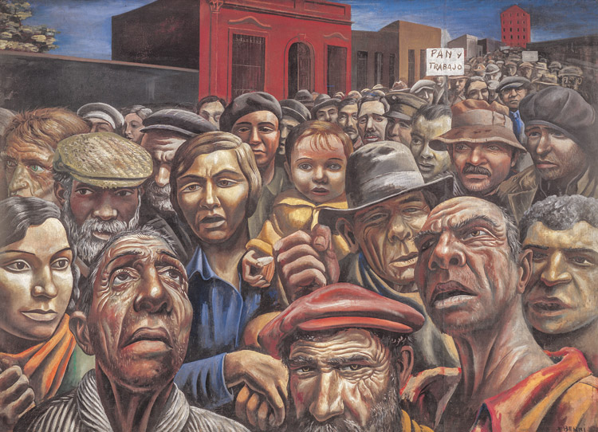
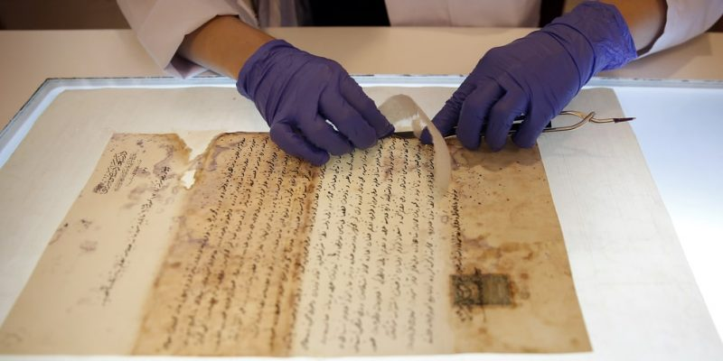

Mujer haciendo empanadas en una antigua fabrica de pastas de Banfield, Buenos Aires,1932.
Nuestro Trabajo
Trabajadoras de Telesud S.A. Televisores Zenith. San Martín, provincia de Buenos Aires,1947.
Mujer finalizando una pieza de cerámica, 1935.
Entretenimiento
“Manifestación” se titula la obra que el artista argentino Antonio Berni (1905-1981) pintó en 1934. Forma parte de una exposición en el MALBA.

Fragmento de instructivo de empadronamiento añp 1922.
Archivos AGN
Garantizamos la conservación de los bienes culturales de la ciudadania referentes a procesos históricos.
Lasfuentesson utilizadas de manera imprescindible.
Son la cristalización de la historia.
Son representaciones que no exponen con exactitud los hechos sino visiones.
Existen del tipo escrito
Existen del tipo oral/testimonial
Existen del tipo arqueológico
Las fuentes son esa variedad rica que permite construir y reconstruir el pasado.
En el Bicentenario del Archivo General de la Nación, producimos junto a Canal Encuentro y Ministerio del Interior "200 historias destacadas", doscientos momentos de la historia argentina registrados en documentos de nuestro acervo.
DocumentaciónEn julio, el Museo ofrece una variada programación, dirigida a distintos públicos y siempre con entrada gratuita, para disfrutar de la colección permanente y de las muestras temporarias exhibidas. La muestra de Cándido López se iniciará el dia 25 de julio.
Solicitar Visita